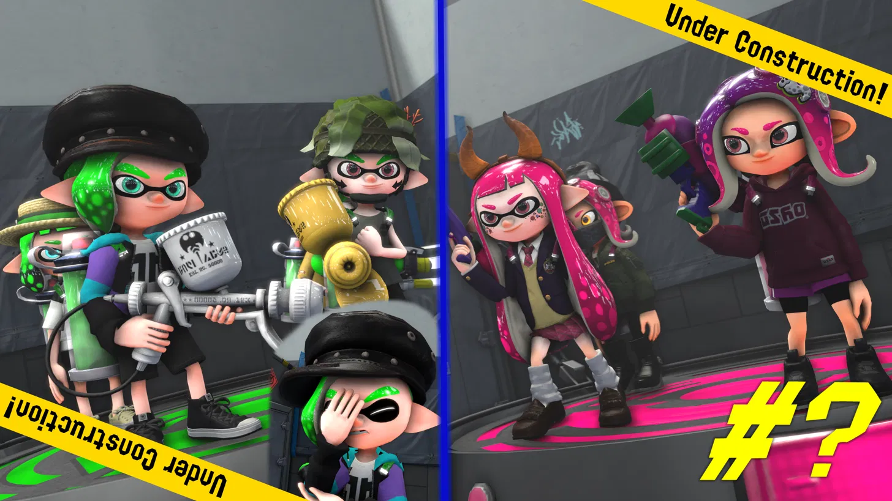
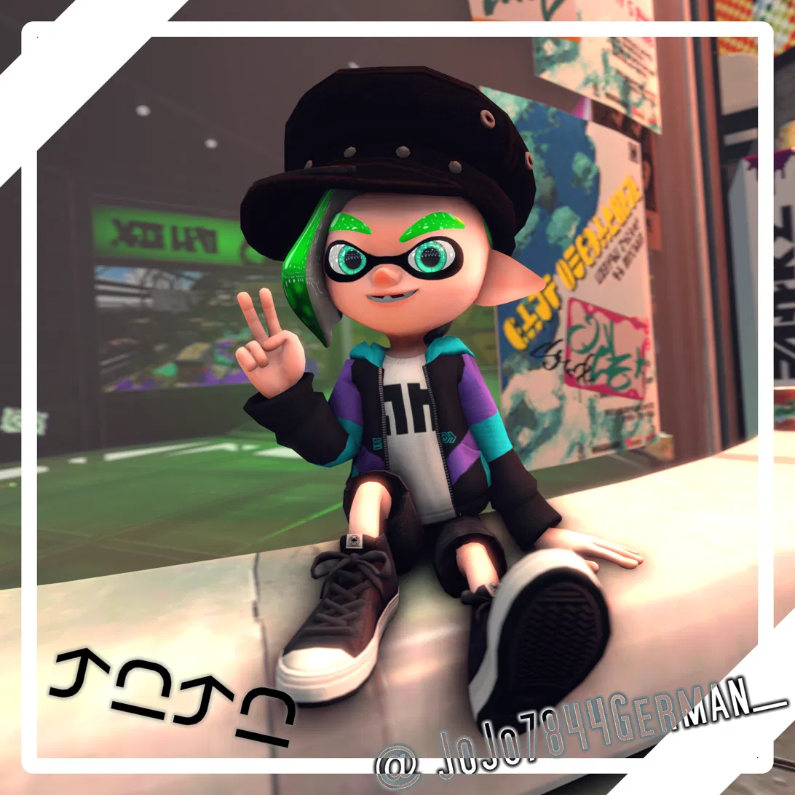

WORK IN PROGRESS01 — 03SFM / POSTER & ANIMATION
↗Kreative Baustelle
Neue Szenen, Figuren und Ideen. Dieses Projekt ist noch in Arbeit — mehr gibt's, sobald es etwas zu zeigen gibt.
Gamer, Hobby-Gamedev und SFM-Animator. Ich mache Dinge, probiere Ideen aus und bin wahrscheinlich gerade irgendwo in einem Stream unterwegs.

Moin! Ich bin JoJo7844German — deutschsprachiger Gamer und Hobby-Gamedev mit einer Schwäche für kreative Projekte.
Wenn ich nicht gerade zocke oder in Streams herumhänge, bastle ich gerne an Postern und Animationen in Source Filmmaker (SFM). Hier findest du meine Projekte, Kanäle und die Orte, an denen wir uns treffen können.
Von Gaming bis zu kleinen kreativen Experimenten — hier ist immer irgendwas los.

WORK IN PROGRESS01 — 03Neue Szenen, Figuren und Ideen. Dieses Projekt ist noch in Arbeit — mehr gibt's, sobald es etwas zu zeigen gibt.
Spielideen testen, herumprobieren und dabei Neues lernen.
Mehr folgt baldGames spielen, Leute treffen und in den Streams der Community auftauchen.
Auf Twitch vorbeischauen ↗Eine Sammlung meiner Add-ons für den Source Filmmaker.
Videos, Livestreams und alles dazwischen. Klick dich durch!
Du findest mich auch auf diesen Plattformen. Die Community ist deutsch- und englischsprachig.
JoJo7844German@gmail.com ↗Updates, Gedanken, Projekte und alles, was sonst noch so passiert.
Beiträge werden geladen …